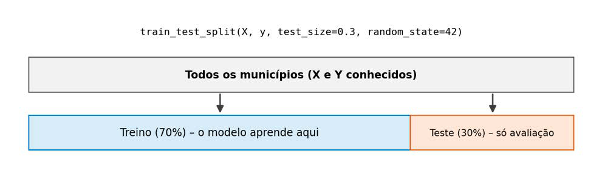
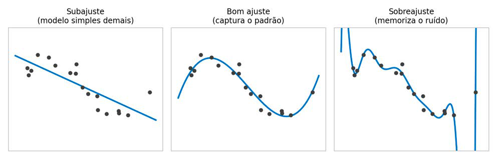

Módulo 3 | Aula 1
Introdução ao Machine Learning
Como saber se um modelo aprendeu? Treino, teste e sobreajuste
Até agora, dissemos que um algoritmo de ML "aprende" a partir de exemplos. Porém, como verificar se ele aprendeu de fato ou se apenas decorou os exemplos que recebeu? Essa pergunta é central em qualquer aplicação de ML e se torna ainda mais importante em saúde, pois um modelo que erra pode influenciar decisões sobre pessoas.
Decorar não é aprender
Pense em um estudante que se prepara para uma prova resolvendo sempre a mesma lista de exercícios, até memorizar todas as respostas. Se a prova repetir a lista, ele tira nota máxima. Se a prova trouxer questões novas sobre o mesmo conteúdo, ele pode ir muito mal, porque memorizou respostas em vez de compreender a matéria.
Com os modelos de ML acontece o mesmo. O objetivo não é acertar os casos que o modelo já viu, mas generalizar, isto é, fazer boas previsões para casos novos. Um modelo que prevê bem a taxa de mortalidade dos municípios usados no treinamento, mas falha em outros municípios, não tem utilidade prática para a gestão.
Separando os dados: conjunto de treino e conjunto de teste
Para avaliar a generalização, dividimos os dados em duas partes:
- Conjunto de treino: os exemplos que o modelo usa para aprender a relação entre X e Y.
- Conjunto de teste: exemplos guardados à parte, que o modelo não vê durante o treinamento. Eles funcionam como a "prova com questões novas".
A comparação entre o desempenho no treino e no teste é o que nos diz se o modelo aprendeu um padrão ou se apenas memorizou os dados.
Figura 4 - Divisão dos dados em conjuntos de treino e de teste.

Temos os dados de cerca de 90 municípios do estado do Rio de Janeiro. Podemos usar 70% deles para treinar o modelo e reservar os 30% restantes para o teste. O modelo nunca "enxerga" os municípios do teste durante o aprendizado. Assim, o erro medido nesses municípios é uma estimativa mais honesta de como ele se sairia com dados novos.
Mão na massa: prevendo a taxa de mortalidade de 2022
Vamos voltar à pergunta do gestor apresentada no início da aula: é possível estimar a taxa de mortalidade de 2022 de um município a partir das taxas de 2019, 2020 e 2021? Em termos da formalização f: X → Y:
- X (variáveis preditoras): as taxas de mortalidade de 2019, 2020 e 2021.
- Y (variável alvo): a taxa de mortalidade de 2022.
Como Y é um valor numérico contínuo, trata-se de uma tarefa de regressão. Primeiro, reorganizamos a tabela da aula 2 do módulo 2 para que cada linha seja um município e cada coluna, a taxa de um ano:
import pandas as pd
obitos_muni_ano = pd.read_csv("obitos_muni_ano.csv")
# Uma linha por município, uma coluna por ano
tabela = (
obitos_muni_ano
.pivot(index="codigo_municipio",
columns="ano_obito",
values="taxa_mortalidade")
# remove municípios sem informação em algum dos anos
.dropna()
)
tabela.columns = [f"taxa_{ano}" for ano in tabela.columns]
tabela.head(3)O método pivot() faz o caminho inverso do formato "longo" que obtivemos com groupby() na aula 2 do módulo 2: transforma os valores de uma coluna (ano_obito) em novas colunas. Em seguida, separamos X e y e dividimos os dados em treino e teste com a função train_test_split(), da biblioteca scikit-learn:
from sklearn.model_selection import train_test_split
X = tabela[["taxa_2019", "taxa_2020", "taxa_2021"]] # DataFrame
y = tabela["taxa_2022"] # Series
X_treino, X_teste, y_treino, y_teste = train_test_split(
X, y,
test_size=0.3, # 30% dos municípios reservados para teste
random_state=42 # mesma divisão a cada execução
)
print("Municípios no treino:", len(X_treino))
print("Municípios no teste:", len(X_teste))O parâmetro random_state fixa o sorteio que separa treino e teste. Sem ele, cada execução produziria uma divisão diferente e resultados ligeiramente diferentes. Fixar esse valor é uma prática de pesquisa reprodutível, conceito que discutimos na aula 3: qualquer pessoa que executar o seu notebook obterá os mesmos números.
Para o modelo, usaremos uma árvore de decisão. De forma simplificada, ela aprende uma sequência de perguntas do tipo "SE a taxa de 2021 for maior do que tal valor, ENTÃO...". Repare na ligação com o início da aula: em vez de escrevermos essas regras manualmente, como fizemos com o if da aula 1 do módulo 2, o algoritmo as descobre a partir dos dados. Estudaremos esse e outros algoritmos com mais detalhes nas próximas aulas.
A árvore tem um parâmetro chamado max_depth, que limita quantas perguntas ela pode encadear. Quanto maior a profundidade, mais detalhadas as regras que ela consegue aprender. Vamos treinar árvores com profundidades diferentes e medir o erro em cada conjunto:
from sklearn.tree import DecisionTreeRegressor
from sklearn.metrics import mean_absolute_error
# None = árvore sem limite de profundidade
for profundidade in [1, 2, 3, 5, None]:
modelo = DecisionTreeRegressor(max_depth=profundidade,
random_state=42)
# o modelo aprende apenas com o conjunto de treino
modelo.fit(X_treino, y_treino)
erro_treino = mean_absolute_error(y_treino,
modelo.predict(X_treino))
erro_teste = mean_absolute_error(y_teste,
modelo.predict(X_teste))
print(f"Profundidade {profundidade}: "
f"erro no treino = {erro_treino:.1f} | "
f"erro no teste = {erro_teste:.1f}")Os métodos fit() e predict() seguem um padrão que se repete em praticamente todos os modelos do scikit-learn: fit() treina o modelo com X e y, e predict() aplica as regras aprendidas a novos valores de X.
O erro absoluto médio (mean_absolute_error) é a média das diferenças, em valor absoluto, entre a taxa prevista e a taxa real. Ele é expresso na mesma unidade da variável alvo: óbitos por 100 mil habitantes. Um erro de 30, por exemplo, significa que, em média, o modelo errou a taxa do município em 30 óbitos por 100 mil habitantes, para mais ou para menos.
Ao executar o código, observe dois comportamentos. Primeiro, à medida que a profundidade aumenta, o erro no treino diminui, sem limite de profundidade, ele chega a zero, porque a árvore consegue criar uma regra específica para cada município do treino. Segundo, o erro no teste não acompanha essa queda. Em geral, ele melhora nas primeiras profundidades e depois para de melhorar ou volta a piorar. Com poucos municípios, os números podem oscilar, mas a distância entre os dois erros é o que nos interessa.
Sobreajuste e subajuste
A árvore sem limite de profundidade é o nosso estudante que decorou a lista de exercícios. Esse fenômeno se chama sobreajuste (overfitting): o modelo se ajusta tanto aos dados de treino que passa a reproduzir também suas particularidades e ruídos, como flutuações aleatórias de municípios pequenos, e perde a capacidade de generalizar.
O problema oposto é o subajuste (underfitting): o modelo é simples demais para capturar o padrão existente. Uma árvore com uma única pergunta, por exemplo, divide os municípios em apenas dois grupos e atribui a mesma previsão a todos os municípios de cada grupo. A Figura 5 ilustra as três situações com dados simulados.
Figura 5 - Subajuste, bom ajuste e sobreajuste (dados simulados).

Tabela 4 – Como interpretar a comparação entre o erro no treino e o erro no teste.
| Situação | Erro no treino | Erro no teste | O que indica |
|---|---|---|---|
| Subajuste | Alto. | Alto. | O modelo é simples demais e não capturou o padrão. |
| Bom ajuste | Baixo. | Baixo e próximo ao do treino. | O modelo aprendeu um padrão que se generaliza. |
| Sobreajuste | Muito baixo (às vezes zero). | Bem maior do que o do treino. | O modelo memorizou os dados de treino. |
Fonte: Elaborada pelos autores (2026).
Um erro muito baixo no treino não é sinal de um bom modelo. Desconfie sempre de resultados "bons demais" e avalie o desempenho em dados que o modelo não viu. Em saúde, apresentar a um gestor um modelo sobreajustado, com desempenho aparentemente excelente, pode levar a decisões equivocadas sobre alocação de recursos.
Compare sempre o seu modelo com uma previsão ingênua, isto é, uma regra simples que não exige ML; por exemplo, suponha que "a taxa de 2022 será igual à de 2021". O erro dessa regra pode ser calculado com mean_absolute_error(y_teste, X_teste["taxa_2021"]). Se o modelo não superar uma previsão ingênua razoável, ele não está agregando valor à decisão. Neste exemplo, lembre-se de que 2021 foi um ano atípico por causa da pandemia; experimente também usar a taxa de 2019 como previsão ingênua e compare os resultados.
Cuidados na avaliação de modelos com dados de saúde
A divisão em treino e teste é o primeiro passo de uma boa avaliação, mas alguns cuidados adicionais são importantes.
O conjunto de teste deve ser usado apenas no final. No exemplo anterior, escolhemos a profundidade olhando o erro no teste (dados de 2022). Isso é aceitável para fins didáticos, mas, na prática, contamina a avaliação: o teste deixa de ser uma "prova com questões novas". Em projetos reais, os ajustes do modelo são feitos com uma terceira parte dos dados, o conjunto de validação, ou com uma técnica chamada validação cruzada, que veremos mais adiante no módulo.
Cuidado com o vazamento de dados (data leakage). Ele ocorre quando alguma informação sobre o desfecho entra nas variáveis preditoras. Por exemplo, usar a data do óbito, ou o motivo de saída registrado ao final da internação, para prever se uma internação terminará em óbito. O modelo parecerá excelente, mas é inútil na prática, pois essa informação não estará disponível no momento da decisão.
O tempo importa. Os anos de 2020 e 2021 foram marcados pela pandemia de covid-19, que alterou fortemente a mortalidade. Um modelo treinado nesse período pode não representar bem os anos seguintes. Quando o objetivo é prever o futuro, o mais adequado costuma ser treinar com os anos mais antigos e testar com os mais recentes, em vez de sortear os registros.
Um modelo preditivo de risco de internação foi treinado com dados de uma região com boa cobertura de serviços de saúde e apresentou baixo erro no conjunto de teste. Ele terá o mesmo desempenho se for aplicado em outra região do país, com perfil socioeconômico e cobertura diferentes? O que isso nos diz sobre os limites da generalização e sobre a equidade, tema da próxima seção?